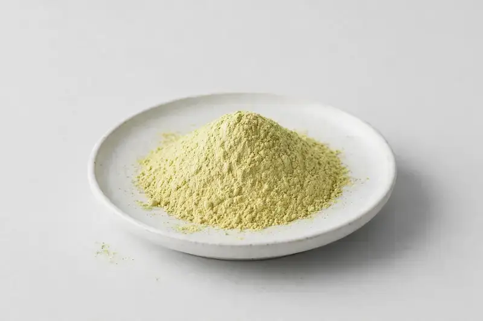

Rutin (Sophora japonica) — a flavonoid glycoside powder from Sophora japonica flower bud for flavonoid positioned formulations.

Overview
Rutin is a flavonoid glycoside obtained commercially from Sophora japonica flower bud, where it occurs at relatively high levels. It is a widely traded botanical ingredient in flavonoid and antioxidant-positioned supplement ranges, commonly supplied at high HPLC purity. We source through vetted partner producers and align purity, source material and testing scope with the specification each buyer provides.
Specifications below reflect commonly requested options in the market — not a stock list. Share your target spec and we'll confirm exactly what we can supply, honestly.
| Specification | Details |
|---|---|
| Botanical identity | Rutin, Sophora japonica flower bud-derived flavonoid powder |
| Marker compound | Rutin — commonly requested: 95%+ (HPLC) |
| Appearance | Fine powder, color typical of the extract |
| Mesh size | Typically 80–100 mesh (confirm per inquiry) |
| Testing | COA/TDS arranged on request; scope agreed per your spec |
Applications
Documentation
We don't claim in-house labs or certifications we don't hold. COA and TDS documents can be arranged on request, and testing scope is agreed against your specification before supply.
FAQ
Related products
Camellia sinensis
Key marker: EGCG / Polyphenols
View specs →Serenoa repens
Key marker: Fatty Acids
View specs →Echinacea purpurea
Key marker: Echinacoside
View specs →Hesperidin (Citrus spp.)
Key marker: Hesperidin 90-98%
View specs →Betaine (trimethylglycine)
Key marker: Betaine 96-99%
View specs →Send your target spec and volumes — we'll respond with a tailored quotation.
Request a Quote